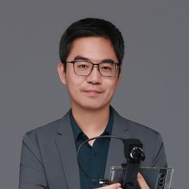

Boxin Shi
Peking University, China
Event-based Photometric Imaging
Abstract
Compared with conventional frame-based cameras, the neuromorphic vision sensor, such as the event camera and the spike camera have unique advantages, especially in their ability to perceive high-speed moving objects and scenes with high dynamic range. Existing research has actively demonstrated the advantages of event cameras in computer vision tasks such as image deblurring, high dynamic range imaging, and high-speed object detection and recognition. However, the photometric image formation model of event cameras has not been carefully analyzed. This talk will share a series of research progress on modeling and analyzing the photometric image formation model of an event camera that records and responses to high-speed radiance changes, for achieving real-time photometric stereo, normal and reflectance estimation, hyperspectral imaging, light transport analysis, and so on.
Biography
Boxin Shi is currently a Boya Young Fellow Associate Professor (with tenure) and Research Professor at Peking University, where he leads the Camera Intelligence Lab. He received the PhD degree from the University of Tokyo and did postdoc research at MIT Media Lab. His research interests are computational photography, computer vision, generative AI, and embodied AI. He has published 38 papers in TPAMI and 125 papers in CVPR/ICCV/ECCV. His papers were awarded as Best Paper Runners-Up at CVPR'24/ICCP'15 and selected as Best Paper Candidate at CVPR'26/3DV'26/ICCV'15. He has received the Okawa Foundation Research Grant (2021) and IJCV Outstanding Editorial Board Members Award (2025). He serves as the Editor-in-Chief of IJCV, the associate editor of TPAMI, and (lead) area chairs of CVPR/ICCV/ECCV.